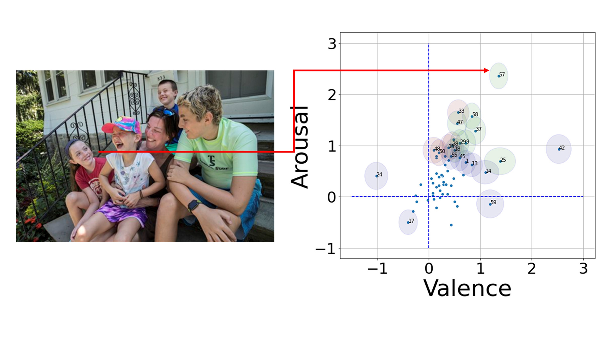

What information do people use when perceving others' emotions?
Which picture do you think is more affected by surrounding information when inferring a person's emotion?
ROLE
1) Web programming for experiments
2) Data collection, analysis
3) Paper writing
SKILLS UTILIZED
Coding(javaScript, php)
Purpose of this project
When inferring the emotions of others, people rely heavily on contextual information. Importantly, since emotions are often elicited in social contexts, the information present in the emotion expresser’s surroundings, including situational context and emotional expression of other persons, will provide additional clues. Despite the fact that recent studies have focused on the impact of context on emotion perception, researchers have mainly shed light on facial muscle configuration in emotion perception. For those reasons, we designed experiments using the presence of contextual information in an effort to examine the mechanism of holistic emotion perception.
Dataset
In this project, one of our primary goals was to collect pictures showing an emotional representation that we could observe in the real world. Many studies in the past conducted experiments by presenting controlled emotional expression stimuli that were made under lab conditions. In these studies, participants were asked to express emotions under the experimenters' instructions, which means that participants inevitably represent emotions intentionally, not naturally. After all, the posed stimuli make it only possible to assess certain exaggerated emotions in participants. For instance, AU 10 + AU 12 + AU 16 + AU 25 (Ekman & Friesen, 1978) for happiness, and AU 1 + AU 4 + AU 5 (Ekman & Friesen, 1978) for sadness.
To achieve the project's goal, we chose several news platforms as stimuli sources (e.g., AP, Reuters, Yonhap). We excluded images of celebrities from these platforms, in particular, to avoid anchoring bias and posed facial expressions. Since we targeted these platforms to investigate the "happiness" emotion, happiness-related keywords were searched on them. Keywords were composed of a combination of behavior (e.g., giggle, smile), target (e.g., child, family, student), and place (e.g., playground, amusement park).
Due to a copyright issue, we only presented URLs of pictures we used to let people access and see the composition of stimuli. https://github.com/soominimini/dataset_link
Experiment
Figure 1
In this study, we presented two stimulus types: context-blurred and full-context stimuli.
We left a figure's body cues as intact
as possible and blurred all information except the one figure in the frame.
For an assessment method, we utilized the Self-Assessment-Manikin (SAM) on a 7-scale.
We only provided valence and arousal dimensions in this experiment to eliminate the chances of
distracting participants by offering an irrelevant option.
Result
Figure 2. After subtracted from rated scores of full-context stimuli to context-blurred stimuli, calculated Bonferroni correction. 
Figure 3
In this study, we discovered that people are affected by the emotional representation
besieging a target person when inferring that person's emotion.
This is far different from our primitive hypothesis that people utilize scenery information
(e.g., an amusement park, a funeral) to infer others' emotions.
Instead, people inferred emotions based on emotional states in peripheral areas.
The woman on the right side of Figure 1 was rated valence-negative when she was presented
along with the context (the woman on the left) than when she was presented alone.
In stark contrast, the woman on the left side of Figure 1 was assessed
as more valence-positive when presented with the context.
Figure 3 shows a different aspect of the contextual effect.
The girl in Figure 3 was assessed as valence-positive when she was presented along with manifold people.
Not only is it affected by surrounding emotional states,
but it is also affected by the crowd-amplification-effect (Goldenberg et al., 2021)
and the presence of people's closeness (Greenaway et al., 2018).